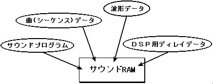
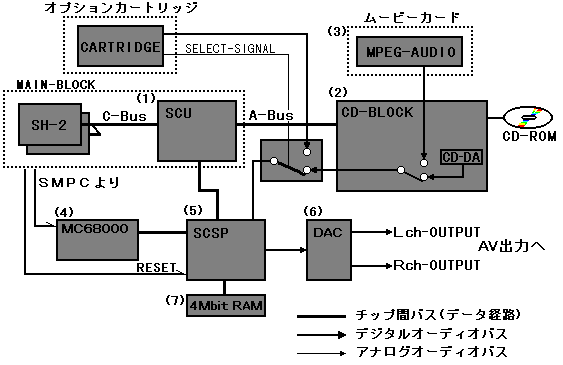

★HARDWARE Manual
★SCSPユーザーズマニュアル
★HARDWARE Manual
★SCSPユーザーズマニュアル
そのほかに、カートリッジコネクターからのデジタルオーディオ入力を利用して、例えば拡張サウンドＩＣの搭載等さまざまなオプション機器によるサウンド機能のグレードアップも可能になっています。
オプション機器ができましたら、そのマニュアルでお目にかかれればと思います。

図1.1 サウンドブロック

※レジスタには「リードのみ」や「ライトのみ」というように制限がつけられているものもありますので、注意してください。
このＣＰＵを搭載していることにより、サウンドブロック制御負担をメインブロック側から取り除くことが可能です。
※もちろんメインブロックによってサウンドブロックを制御することも可能です。
各音源からの出力ですが、サターンにおいて“ＳＣＳＰ”に対して入力可能な音源数はステレオ１系統となっていて、途中のＣＤブロック等においてＣＤ−ＤＡやＭＰＥＧ−ＡＵＤＩＯ、そしてカートリッジからの外部入力を選択するようになっています。
選択されて入力される音に対して、“ＳＣＳＰ”内のＤＳＰでエフェクトをかけたりすることも可能になっています。
Ｄ１５〜Ｄ８ | Ｄ７〜 Ｄ０ | ||||
| SH2-ADDRESS | MC68EC000-ADDRESS | UPPER | LOWER | MC68EC000-ADDRESS | SH2-ADDRESS |
| 0(2)5A00000H | 000000H | サウンドRAM 512Kバイト | 000001H | 0(2)5A00001H | |
| : : : : : |
: : : : : |
: : : : : |
: : : : : | ||
| 0(2)5A7FFFEH | 07FFFEH | 07FFFFH | 0(2)5A7FFFFH | ||
| : : : : : |
: : : : : |
: : : : : |
: : : : : |
: : : : : | |
| 0(2)5B00000H | 100000H | コントロールレジスタ | 100001H | 0(2)5B00001H | |
| : : |
: : |
: : |
: : | ||
| 0(2)5B00EE2H | 100EE2H | 100EE3H | 0(2)5B00EE3H | ||
★HARDWARE Manual
★SCSPユーザーズマニュアル